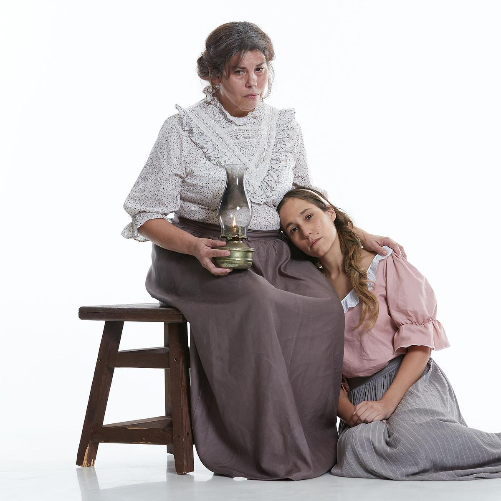
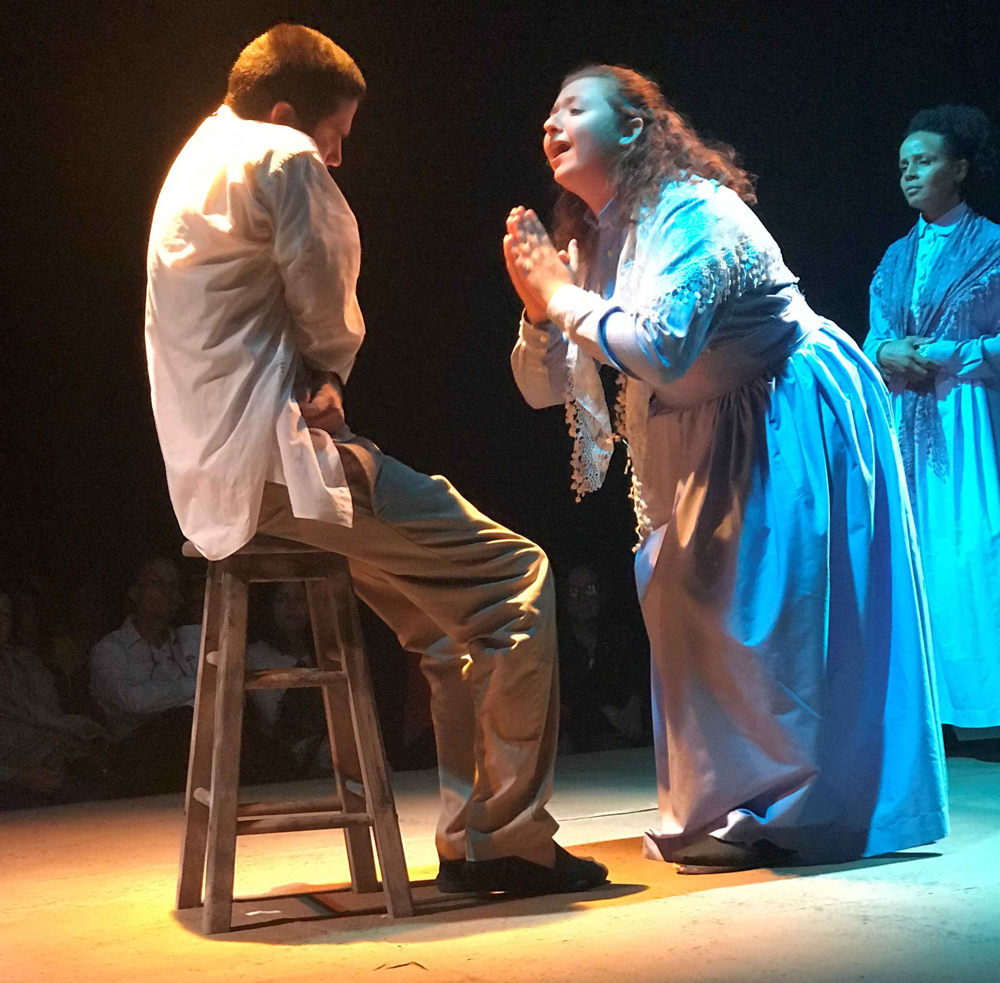

Personajes
 Silvina
Una niña de 14 años que es violada por la pareja de su madre. Esta enamorada de ciro, pero esta obligada a casarse con Gaspar. Es debil y tiene epilepsia.
Leandra
Madre de Silvina y pequeñin. Se menciona que tiene 9 hijos con distintos hombres. Se casa para asegurar comidas y permite que violen a su hija para no pasar hambre.
Pequeñin
hijo de Leandra y Galante
Galante
Rico propietario que tiene mujeres por todas partes. Abandona a su pareja y su hijo.
Ciro
Joven de 20 años que ama a Silvina, pero termina siendo matado.
Gaspar
Hombre que trabaja en finca de Galante. Es alcoholico y muy feo. Es la pareja abusiva de Silvina y la obliga a hacer muchas cosas malas
Andujar
Persona sin escrupulos que obtiene cosas robando y mintiendo. Dueño de la unica tienda del barrio
Marta
Mujer codiciosa, rebusca en la basura y pide de todo a los vecinos con tal de no gastar el dinero. Esconde lo que gana en diferentes sitios en el monte. No alimenta a su nieto que muere de desnutrido. Se muere tratando de llegar al dinero escondido.
Deblas
Borracho mató a un hombre y fue condenado 12 años de carcel, pero escapó. Es primo de Andújar, a quien intenta robar y matar. Pero termina muerto por Gaspar por equivocación.
Montesa
Hombre leal y trabajador, es el mayordomo en los terrenos de Juan del Salto. Recorrio el mundo como marino y tenia experencia y condicièn fisica. A los 40 años regresa a su tierra y tiene su hogar y familia. Trataba a los trabajadores con mano dura.
Marcelo
Joven de 25 años, hermano de Ciro, Tiene aspeco enfermizo, nevioso. No bebía porque sabía que se ponía agresivo, pero bebe por que los demás dicen que no es hombre. Bajo los efectos del alcohol mata a su hermano Ciro. Marcelo muere en la carcel.
Gines
Campesino de buenas cualidades. Compañero de Aurelia. Fue asesinado por Galante pero lo hizo parecer como accidente.
Aurelia
Compañera de Ginés. Galante despues de matar a Ginés la enamora y luego la vota y se queda con la casa y las tierras.
Juan del Salto
Propietario del cafetal, es delgado de ojos triste. Viudo, trabaja fuerte para darle a su hijo Jacobo seguridad económica.. Trata a sus trabajadores como a sus hijos, les da consejos pero nada más. Al final se preocupa por sus cosas y no perder dinero.
Jacobo del Salto
Hijo de Juan del Salto, estudia en Madrid. Solo aparece en las carta que su padre lee.
Padre Esteban
Cura de la parroquia, de 50 años, de caráácter jovial. Es amigo de Juan del Salto.
Doctor Pintado
Médico de la comarca, es amigo de Juan del Salto. Hombre instruido y de ideas liberales.
Rosendo Rioja y Tomás Vilosa
Campesinos que se encuentran con el dependiente de la tienda de Andújar en la madrugada que ocurrió el asesinato de Deblás.
Inés Marcante
Era necio, vanidos y pedante. Salvó de morir ahogado a un muchacho. Silvina se unió a él cuando Ciro murió, pero lo abandonó por su comportamiento despreciable.
Pancha Melao
Las mujeres hablan que ella informó sobre el baile en Vegaplana.
Filomena y Moncho
Son pareja, se mencionan en el baila de Vegaplana
Las tres flacas
Son hermanas y se las llaman así por ser bien delgadas.